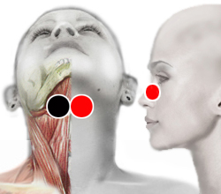

Apnea
Par
epiglotis - epiglotis o nariz

Generalidades:
Es la suspensión temporal del ritmo normal respiratorio. En bebés y niños llega a ser más frecuente, no por esto deja de ser un trastorno serio. Este par adicional puede ayudar a liberar las vías respiratorias y reducir los ronquidos. También conviene revisar el par del adenovirus.
Existen varios tipos:
También tenemos la apnea del sueño que sólo se presenta mientras la persona está dormida, frecuentemente acompañada de ronquidos, es un trastorno que puede comprometer la oxigenación del cerebro. Puede ser de tipo obstructiva, central o mixta.
Algunas de las causas pueden ser: obesidad, ya que la persona no descansa se despierta sintiéndose cansada, somñolienta durante el día (pueden sufrir accidentes), irritable, dolor de cabeza, falta de memoria, coordinación, concentración, incluso depresión. En casos graves puede haber hinchazón de las piernas.
El biomagnetismo podrá tratarla cuando sea causada por agentes infecciosos o disfuncionales. El rastreo bioenergético podrá dar más pistas sobre la causa de la enfermedad y posibles soluciones. A veces puede bastar el dormir de lado en lugar de boca arriba para disminuir el trastorno. En algunos casos se puede requerir cirugía.